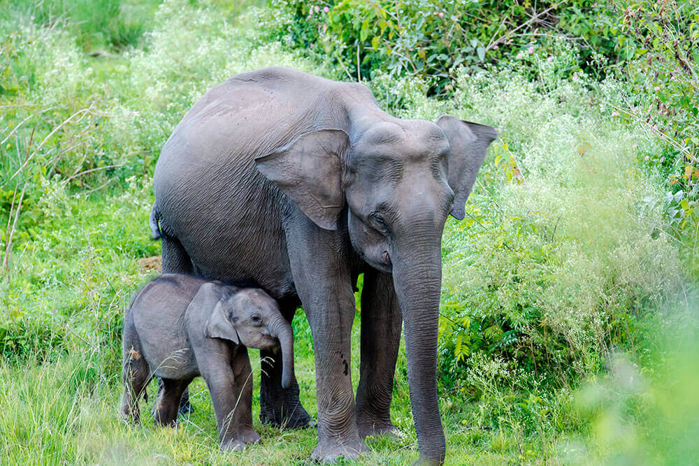
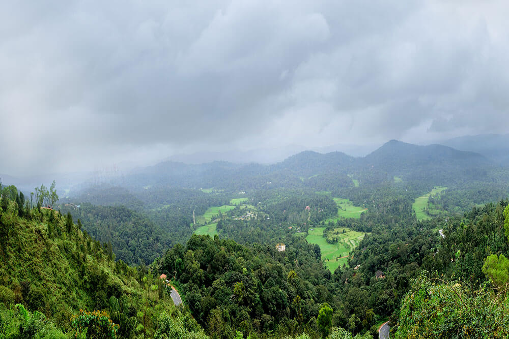
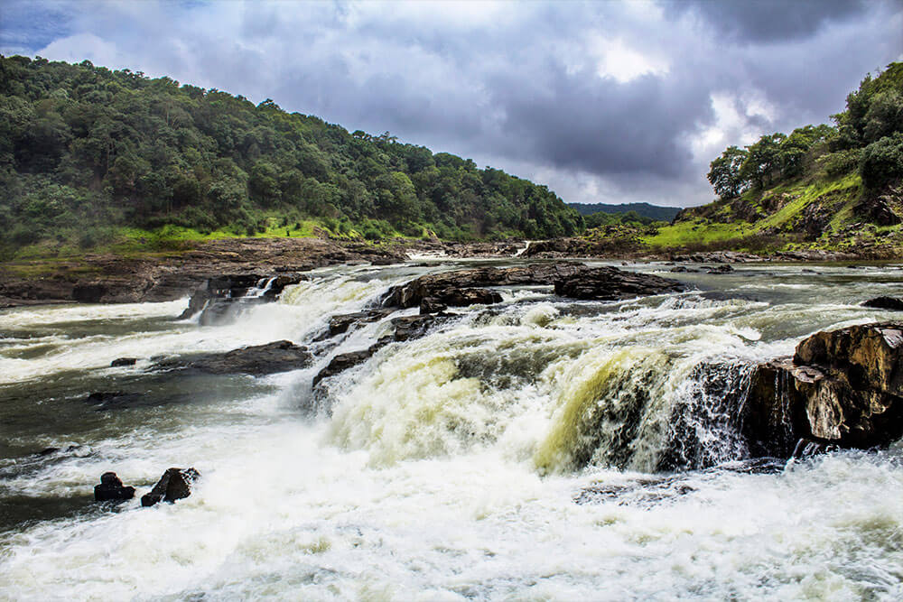

BANDIPUR PARK
Bandipur National Park is regarded as one of the most beautiful and the better-managed national parks of India. Located amidst the picturesque surroundings of the towering Western Ghat Mountains on the Mysore-Ooty highway in Karnataka, Bandipur National Park covers an area of about 874.2 sq km.
BANGLORE

Bengaluru (also called Bangalore) is the capital of India's southern Karnataka state. The center of India's high-tech industry, the city is also known for its parks and nightlife. By Cubbon Park, Vidhana Soudha is a Neo-Dravidian legislative building. Former royal residences include 19th-century Bangalore Palace, modeled after England’s Windsor Castle, and Tipu Sultan’s Summer Palace, an 18th-century teak structure.
BELURU

Belur is a small town in Hassan district in the state of Karnataka, India. The town is renowned for its Chennakeshava Temple dedicated to Vishnu, one of the finest examples of Hoysala architecture and the largest Hindu temple complex that has survived from pre-14th-century Karnata-Dravida tradition.
COORG
Madikeri is a hill town in southern India. Framed by the Western Ghats mountain range, it’s known for the Raja’s Seat, a simple monument overlooking forests and rice paddies. In the center, the 17th-century Madikeri Fort features 2 stone elephants at the entrance. Nearby, the domed Omkareshwar Temple is dedicated to the Hindu deity Shiva. To the northwest, cascading Abbey Falls is surrounded by spice plantations.
DANDEELI
Dandeli is a town in the western Indian state of Karnataka. The Dandeli Wildlife Sanctuary, with its trails and dense forests, is home to animals including black panthers, monkeys and elephants, as well as many bird species. A temple stands at the entrance to the limestone Kavala Caves, known for their stalagmite formations. West of the caves, Anshi National Park encompasses the Kali Tiger Reserve.
HAMPI

Hampi is an ancient village in the south Indian state of Karnataka. It’s dotted with numerous ruined temple complexes from the Vijayanagara Empire. On the south bank of the River Tungabhadra is the 7th-century Hindu Virupaksha Temple, near the revived Hampi Bazaar. A carved stone chariot stands in front of the huge Vittala Temple site. Southeast of Hampi, Daroji Bear Sanctuary is home to the Indian sloth bear.
MYSORE

Mysore (or Mysuru), a city in India's southwestern Karnataka state, was the capital of the Kingdom of Mysore from 1399 to 1947. In its center is opulent Mysore Palace, seat of the former ruling Wodeyar dynasty. The palace blends Hindu, Islamic, Gothic and Rajput styles. Mysore is also home to the centuries-old Devaraja Market, filled with spices, silk and sandalwood.